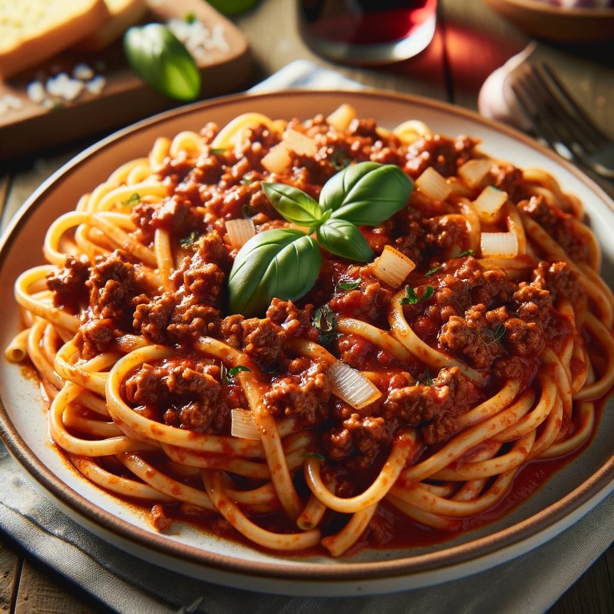

Ground Beef Pasta Recipe

Ground Beef Pasta with Red Sauce and Linguini
This is a very basic, healthy recipe that shouldn't take more than 15-20 minutes to finish. It can be done by beginners and is ideal for someone who needs to meal prep on a regular basis.
Ingredients
- 8oz lean ground beef (93% lean)
- 1 tsp salt
- 85g of linguini pasta
- 50g of diced onions
- 1 tbsp extra virgin olive oil
- 1/4 cup of chicken broth
- 1/2 cup of Prego Marinara Sauce
- 3 cups of water
Instructions
- For the pasta, have a small pot on the oven set to medium high. After 2 minutes fill the pot with 6 cups of water.
- Add all 85g of linguini pasta into the small pot, making sure as much of the pasta in submerged in the water.
- The pasta should finish cooking in 10 minutes, stir every 2 minutes.
- Place a large pot on the oven and turn the heat up to medium high.
- Immediately add the diced onions into the pot along with 1 tbsp of the olive oil.
- Add the tsp of salt to this mix and stir for 2 minutes until the onions become a bit yellow
- Now move the sauteed onions to the side of the pot and add the 8oz of ground beef. Use a spatula to chop the beef up into small segments
- To prevent this mix from drying up, pour 1/4 cup of chicken broth into the pot.
- For 4 minutes, let this mix cook, and then add the 1/2 cup of Prego Marinara Sauce into the mix. Stir thoroughly and let it cook for another 4 minutes, then turn off the heat.
- The pasta should be cooked now, so carefully take the small pot, drain the water off with a pasta strainer so that only the cooked pasta is left.
- Pour the cooked pasta into the large pot and mix thoroughly for 30 seconds to 1 minute with the sauce.
- The dish should now be ready to serve.